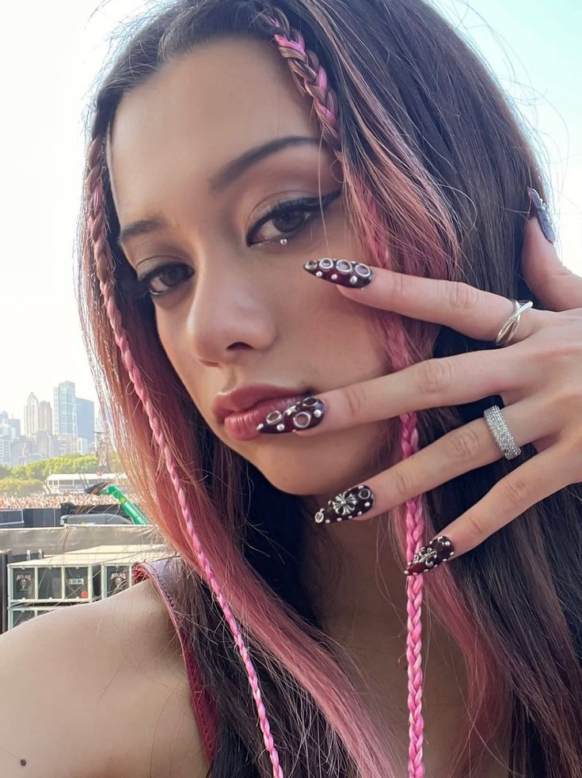
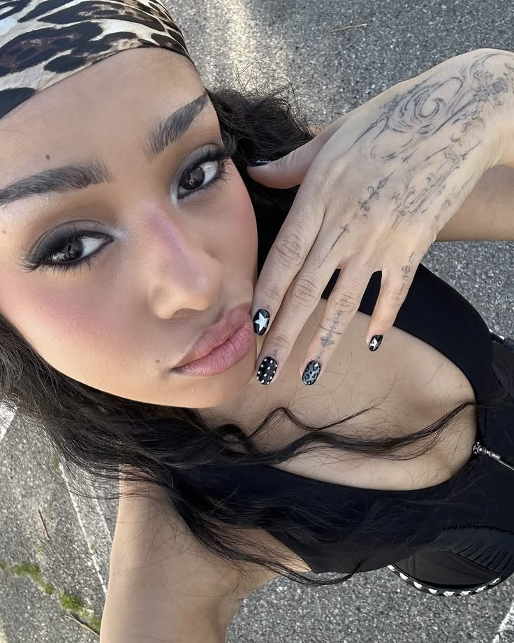
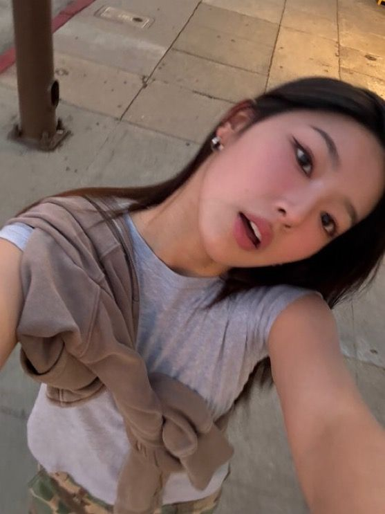

.jpg)
Sophia Larforteza
Sophia Larfoteza é uma cantora filipino-amaricana e líder do grupo KATSEYE. Ela se destaca pela sua voz, carisma e liderança no grupo.
Saiba mais
Lara Raj ⊹ ࣪ ˖
Lara Raj é uma cantora norte-americana de ascendencia indiana e é a vocalista principal do KATSEYE. Ela é conhecida por sua voz marcante e pela representação da cultura sul-asiatica no grupo.
Saiba maisDaniela Avanzini ⋆˚࿔ ༄
Daniela Avanzini é uma cantora norte-americana de ascedencia venezuelana e cubana e é a dançarina principal do KATSEYE.
Saiba mais
Megan Skiendiel
Megan Skiendiel é integrante do KATSEYE e chama atenção por seu talento na dança, voz versátil e energia nos palcos. Com muito carisma, ela se tornou uma das integrantes mais queridas do grupo e ajuda a criar performances marcantes.
Saiba mais
Manon Bannerman
Manon Bannerman é uma cantora e dançarina intregrante do grupo feminino global KATSEYE. Nascida na Suiça, ela se destaca pelo carisma, elegancia e presença de palco.
Saiba mais
Jeung Yoonchae
Jeong Yoonchae é uma cantora sul-coreana e integrante do KATSEYE. Conhecida por sua voz suave, talento na dança e dedicação, ela é a integrante mais jovem do grupo.
Saiba mais